01. Мои классы
Мои классы → Мои классы
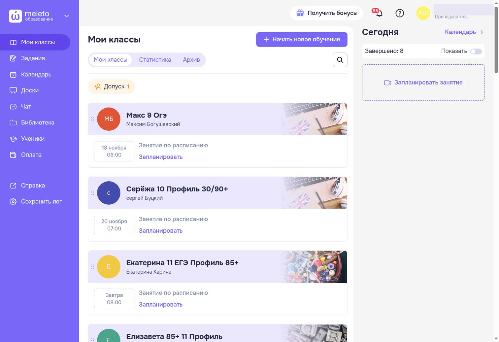
Что повторить: Список карточек с аватаром, обложкой, названием, участниками и ближайшим слотом. Справа панель «Сегодня». Сохранить компактную плотность, порядок и внутренний скролл.
Поведение: Карточка открывает класс. Поиск фильтрует список. «Начать новое обучение» открывает выбор формата. Планирование связано с выбранным классом.
Предлагаемые сущности: Course, Enrollment, Lesson, ScheduleRule02. Новое обучение: выбор формата
Мои классы → Начать новое обучение
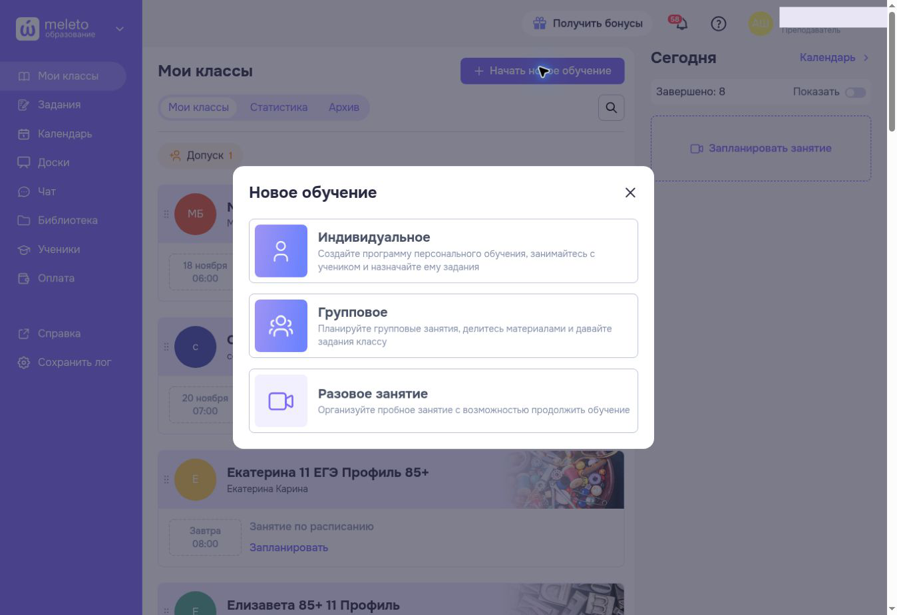
Что повторить: Центральное окно с тремя крупными строками: индивидуальное, групповое, разовое занятие. В строке иконка, название, пояснение; крестик закрытия.
Поведение: Каждый пункт открывает свою форму. Закрытие возвращает к списку без создания сущности.
Предлагаемые сущности: Course.type, Lesson03. Индивидуальный класс: начало формы
Новое обучение → Индивидуальное
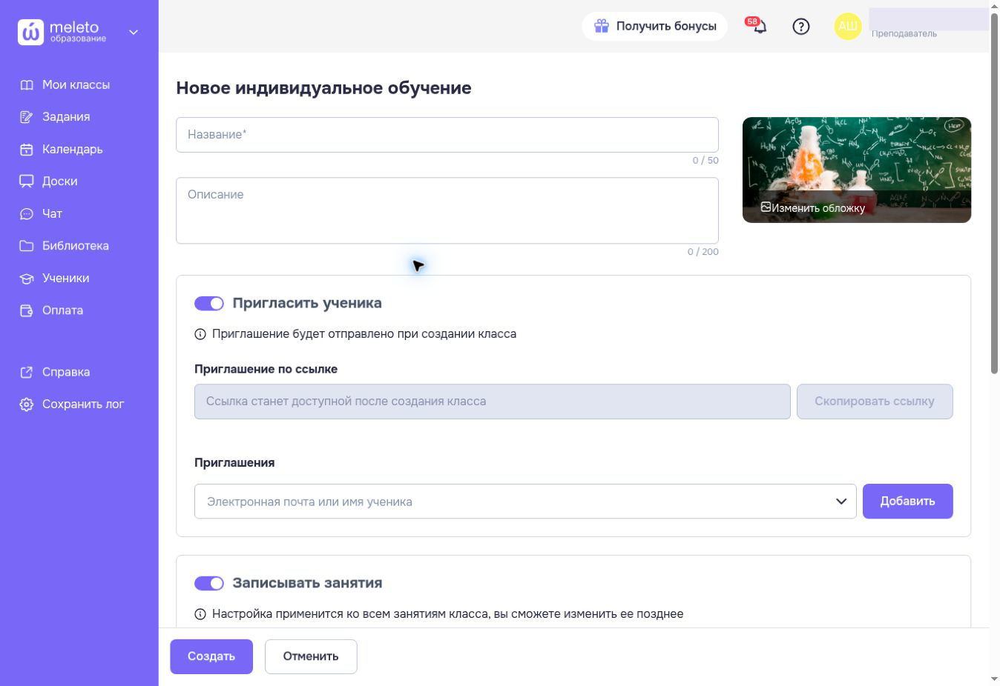
Что повторить: Название до 50, описание до 200 символов, обложка, приглашение ученика, запись занятий. Счётчики символов и одинаковые поля с плавающей подписью.
Поведение: Ссылку приглашения активировать после создания. Добавление адресата в форме отделить от отправки приглашения при сохранении.
Предлагаемые сущности: Course, Invitation, RecordingPolicy04. Индивидуальный класс: настройки
Та же форма → прокрутить вниз
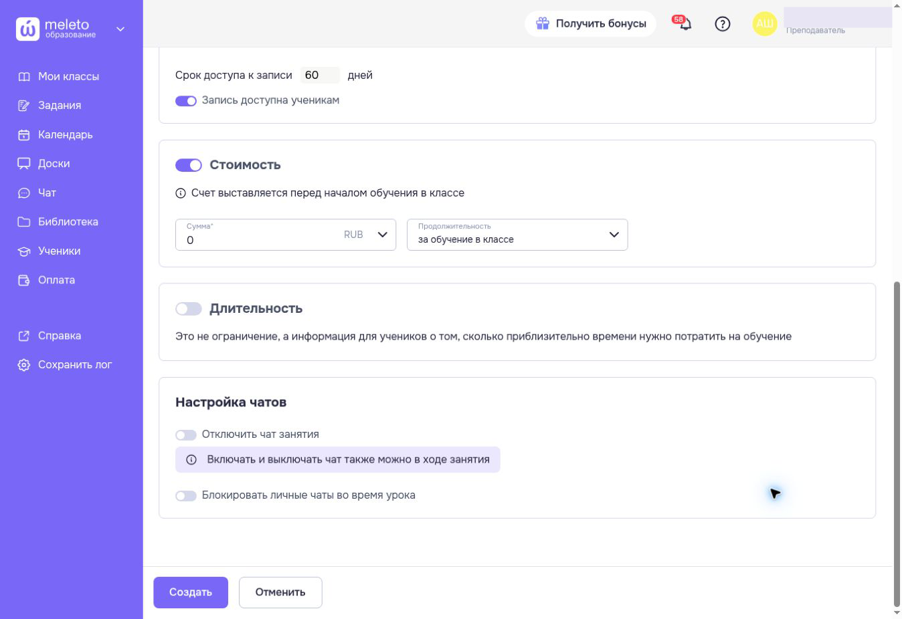
Что повторить: Стоимость: сумма, валюта, основание оплаты; длительность; настройки чатов. Переключатели раскрывают зависимые поля. Фиксированные «Создать» и «Отменить».
Поведение: Сохранять класс одной операцией. При отмене не создавать класс, счёт и приглашения. Чат занятия и личные чаты имеют отдельные настройки.
Предлагаемые сущности: CourseSettings, PricePolicy05. Групповой класс: начало формы
Новое обучение → Групповое
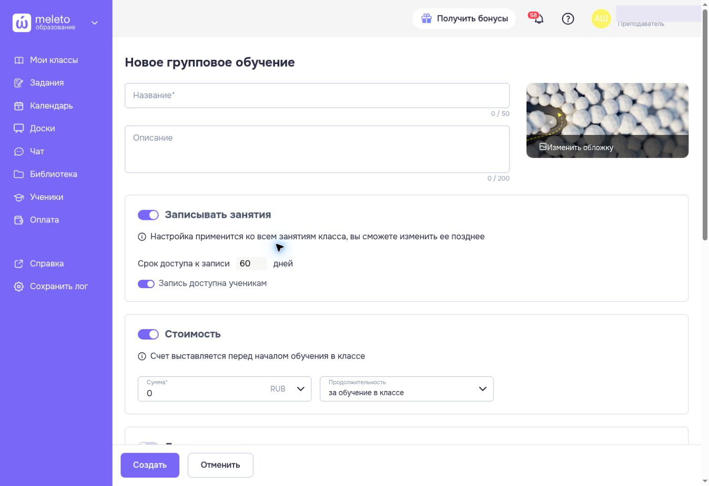
Что повторить: Название, описание, обложка, запись и срок доступа, стоимость. Повторить общие компоненты индивидуального класса.
Поведение: Тип обучения определяет правила состава, но не создаёт отдельную копию системы занятий и материалов.
Предлагаемые сущности: Course.type=group, RecordingPolicy06. Групповой класс: участники
Групповое обучение → низ формы
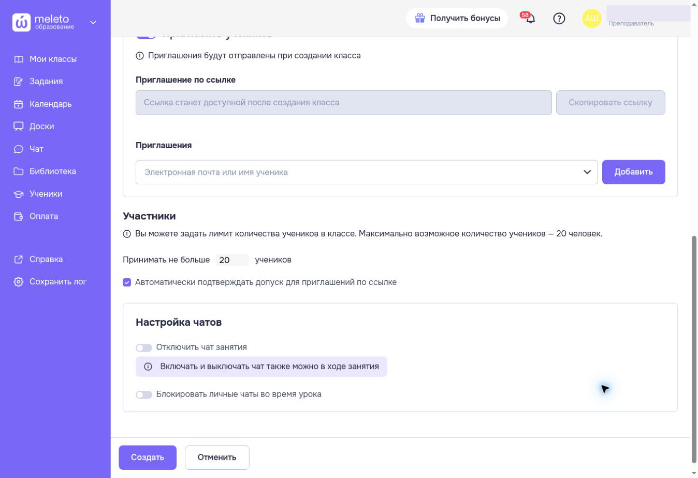
Что повторить: Приглашения, лимит учеников (на снимке максимум 20), автоматическое подтверждение допуска по ссылке, настройки чатов.
Поведение: Хранить лимит и режим допуска в настройках класса. Участие — отдельная запись на каждого ученика. Учитывать занятые места при принятии приглашения.
Предлагаемые сущности: Enrollment, Invitation, CourseSettings07. Разовое занятие
Новое обучение → Разовое занятие
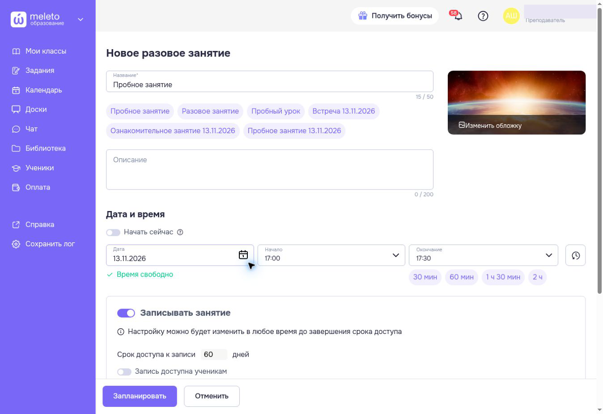
Что повторить: Название с готовыми подсказками, описание, обложка, дата, начало/конец, «Начать сейчас», кнопки длительности, запись. Нижняя панель действий.
Поведение: Разовое занятие имеет участников и доску; постоянный класс не обязателен. Проверять интервал времени и показывать занятость.
Предлагаемые сущности: Lesson.kind=one_time, Participant08. Выбор даты
Разовое занятие → поле даты
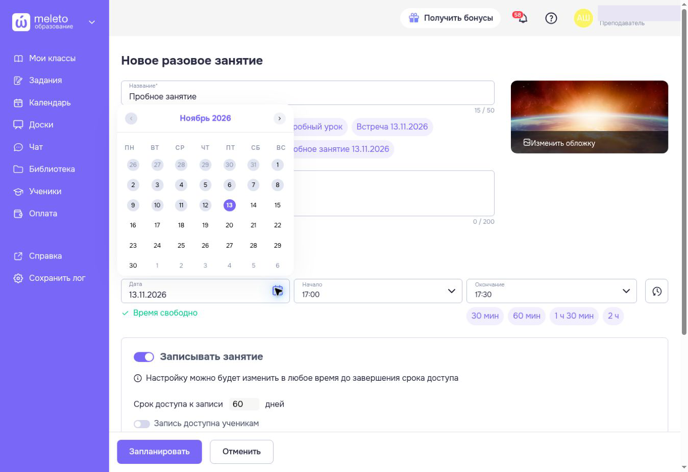
Что повторить: Всплывающий календарь: месяц, стрелки, дни недели, выбранный день, соседние месяцы. Привязать окно к полю, сохранить отступы.
Поведение: Выбор меняет только черновик формы. Закрытие снаружи не отправляет форму. Даты отображать в часовом поясе пользователя.
Предлагаемые сущности: Lesson.starts_at, User.time_zone09. Класс: сводка
Мои классы → карточка класса → Сводка
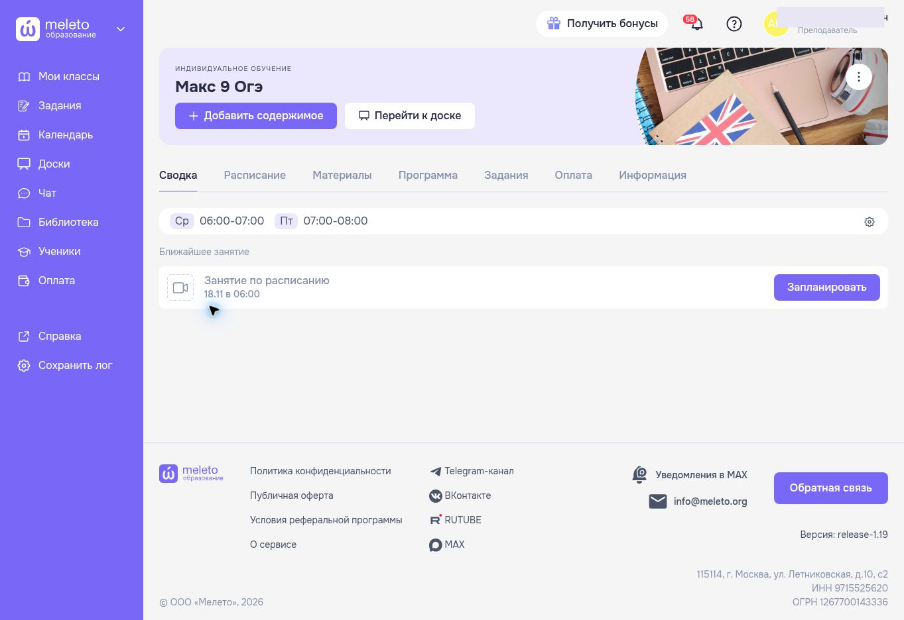
Что повторить: Лавандовый баннер, тип обучения, название, обложка справа, меню, «Добавить содержимое», «Перейти к доске». Семь вкладок, слоты расписания, ближайшее занятие.
Поведение: Шапка и вкладки общие для класса. Ближайший слот и запланированное занятие различать: слот ещё не означает созданный урок.
Предлагаемые сущности: Course, ScheduleRule, Lesson10. Добавление содержимого
Класс → Добавить содержимое
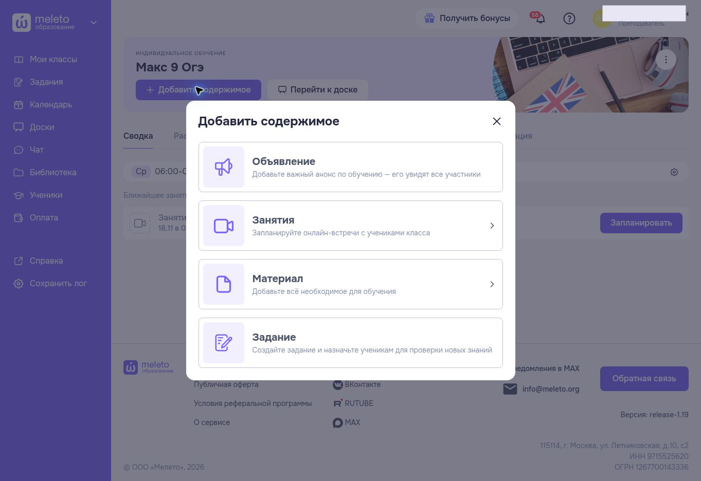
Что повторить: Окно с четырьмя вариантами: объявление, занятия, материал, задание. Крупные кликабельные строки с иконками и пояснениями.
Поведение: Объявление открывает редактор. Занятия — подменю количества. Материал — меню источника. Задание — конструктор.
Предлагаемые сущности: Announcement, Lesson, Material, Assignment11. Одно или несколько занятий
Добавить содержимое → Занятия
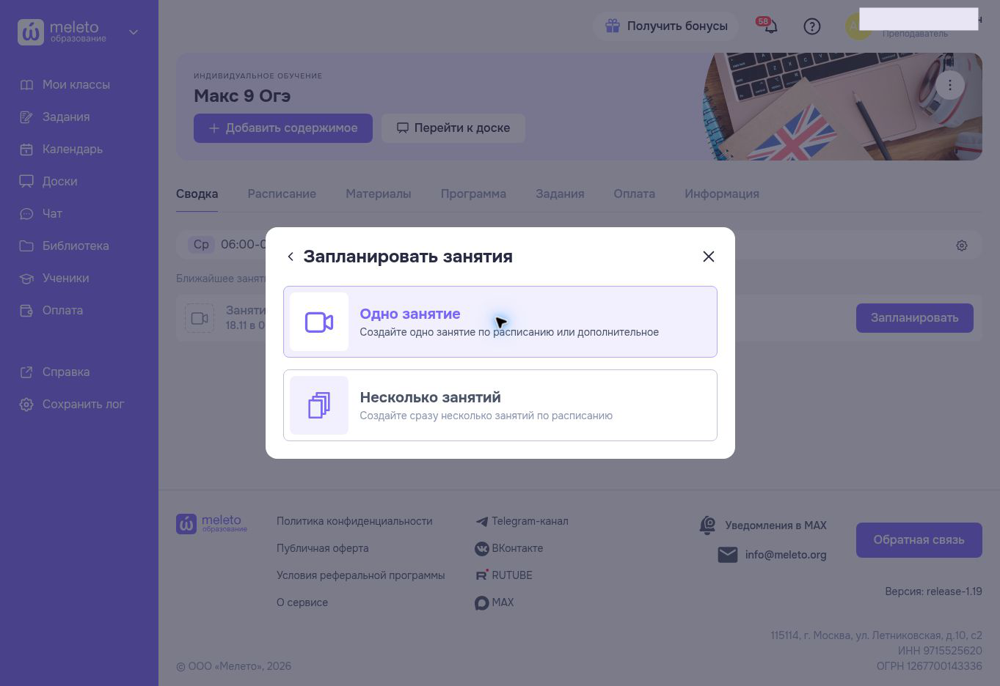
Что повторить: Вложенное окно с навигацией назад и двумя вариантами: одно занятие / несколько занятий. Повторить обводки и активную подсветку.
Поведение: Одно занятие ведёт на отдельную страницу. Несколько занятий открывает массовое планирование по правилам расписания.
Предлагаемые сущности: Lesson, ScheduleRule12. Занятие класса: дата и время
Класс → Добавить содержимое → Занятия → Одно
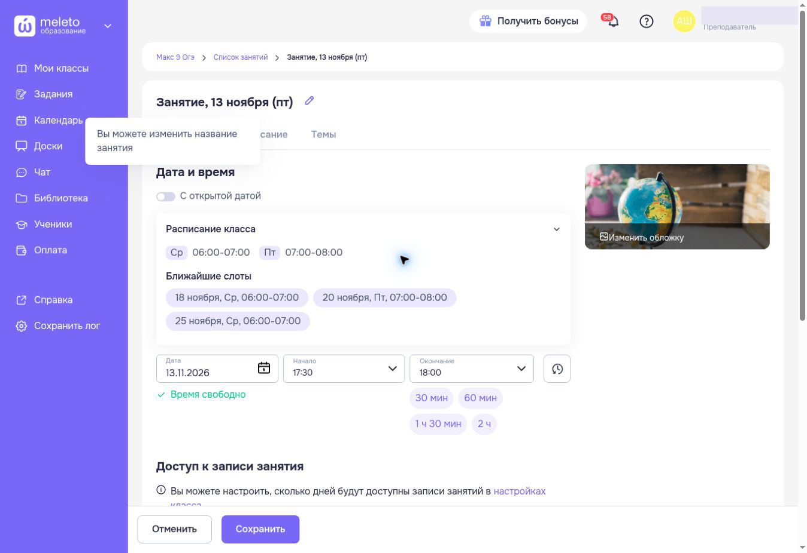
Что повторить: Хлебные крошки, редактируемое название, внутренние якоря «Дата и время / Описание / Темы», открытая дата, расписание и ближайшие слоты, интервал, обложка.
Поведение: Выбранный слот подставляет дату и время. Открытая дата допускает урок без фиксированного старта. Сохранение создаёт одно занятие класса.
Предлагаемые сущности: Lesson.course_id, Lesson.status13. Занятие: описание и темы
Создание занятия → нижняя часть
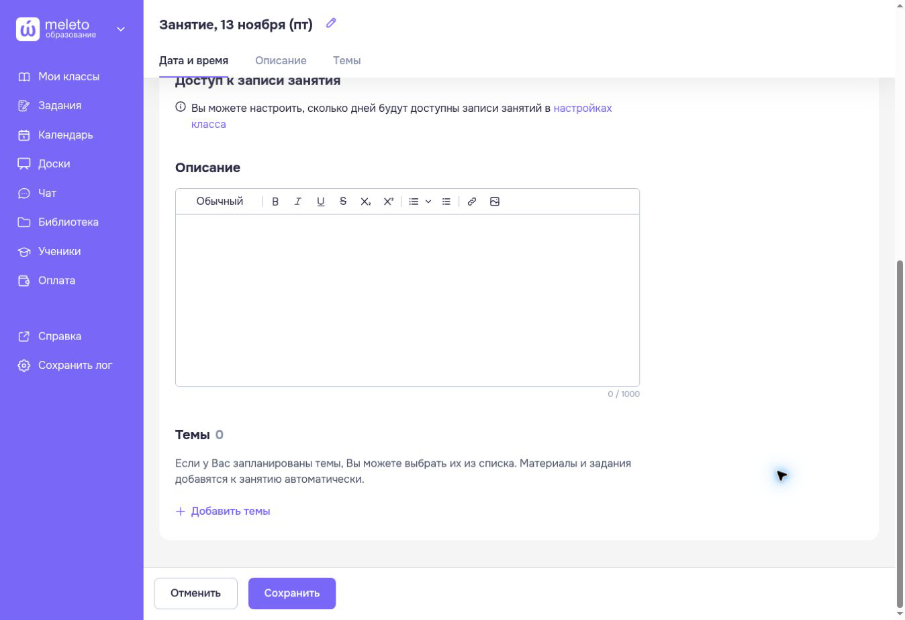
Что повторить: Информация о сроке доступа к записи, rich-text описание до 1000, блок тем со счётчиком и «Добавить темы». Фиксированная панель действий.
Поведение: Материалы и задания выбранных тем должны быть доступны в контексте занятия. Избегать физического дублирования каждого файла.
Предлагаемые сущности: LessonTopic, Topic, MaterialLink14. Выбор тем для занятия
Создание занятия → Добавить темы
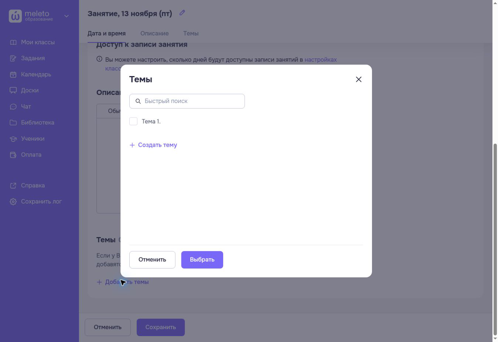
Что повторить: Модальное окно: поиск, список с флажками, «Создать тему», «Отменить», «Выбрать». Список скроллится отдельно от действий.
Поведение: Подтверждение применяет выбор к черновику занятия. Тема принадлежит классу; связь с занятием — многие ко многим.
Предлагаемые сущности: Topic, LessonTopic15. Класс: расписание
Класс → Расписание
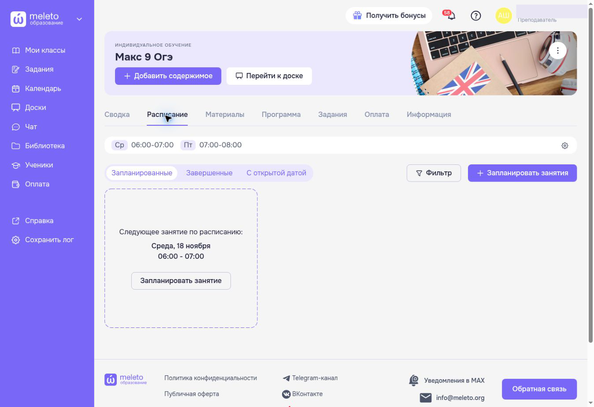
Что повторить: Слоты, настройки расписания, подтабы «Запланированные / Завершённые / С открытой датой», фильтр, планирование. Карточка следующего слота.
Поведение: Фильтры относятся к урокам текущего класса. Переход по карточке открывает занятие, а не новую форму класса.
Предлагаемые сущности: ScheduleRule, Lesson16. Класс: материалы
Класс → Материалы
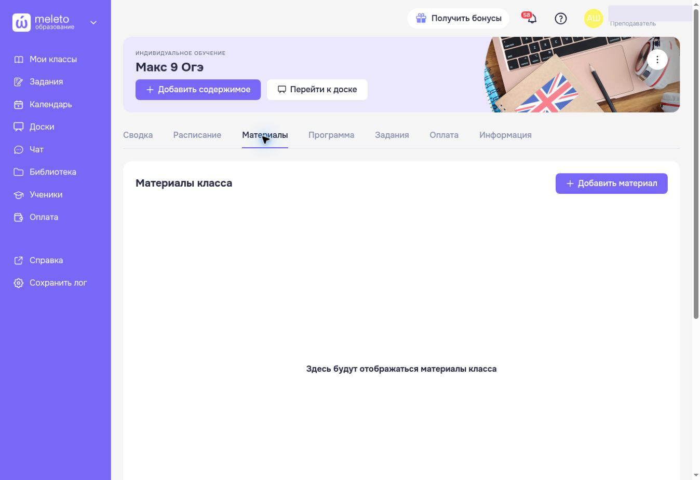
Что повторить: Белая область материалов с заголовком, «Добавить материал» справа и центрированным пустым состоянием.
Поведение: Один Material может быть прикреплён к классу, теме, занятию или заданию через отдельную связь с контекстом.
Предлагаемые сущности: Material, MaterialLink17. Класс: программа
Класс → Программа
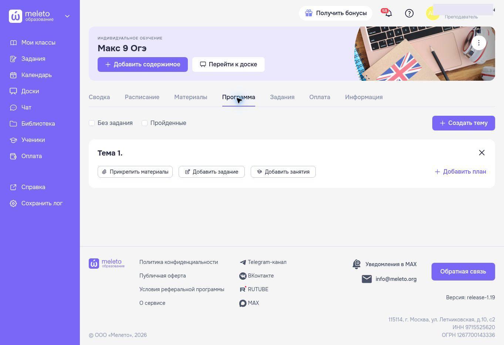
Что повторить: Фильтры «Без задания / Пройденные», «Создать тему». Карточка темы с прикреплением материалов, заданиями, занятиями и планом.
Поведение: У темы есть порядок, план и отметка прохождения. Контент темы переиспользуется в занятиях. Не путать программу и календарь.
Предлагаемые сущности: Topic, TopicPlan, LessonTopic18. Класс: задания
Класс → Задания
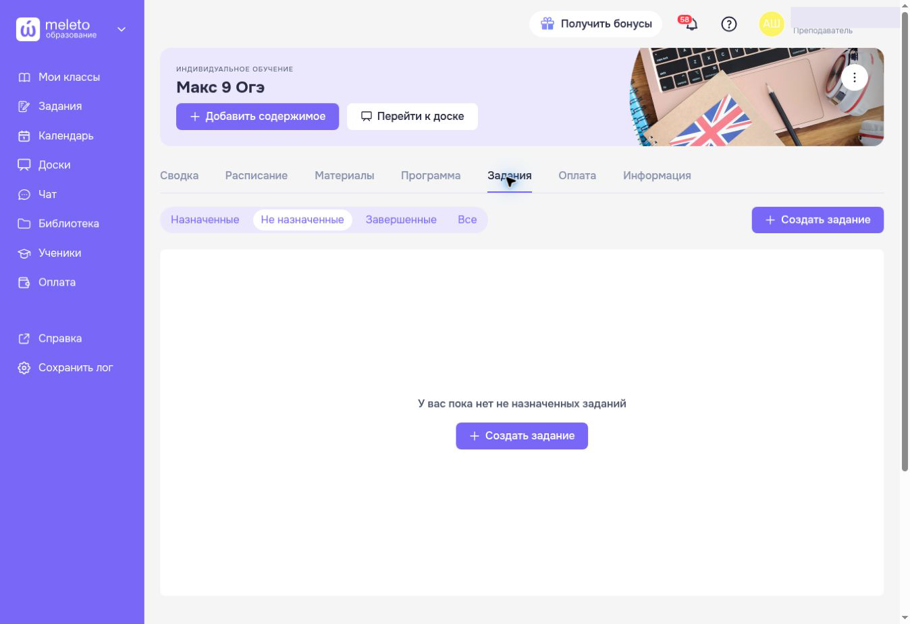
Что повторить: Подтабы «Назначенные / Не назначенные / Завершённые / Все», кнопка создания, пустое состояние и повторная основная кнопка.
Поведение: Разделять шаблон задания и его назначение конкретному ученику. Фильтры не должны смешивать статусы разных учеников.
Предлагаемые сущности: Assignment, AssignmentRecipient19. Класс: оплата
Класс → Оплата
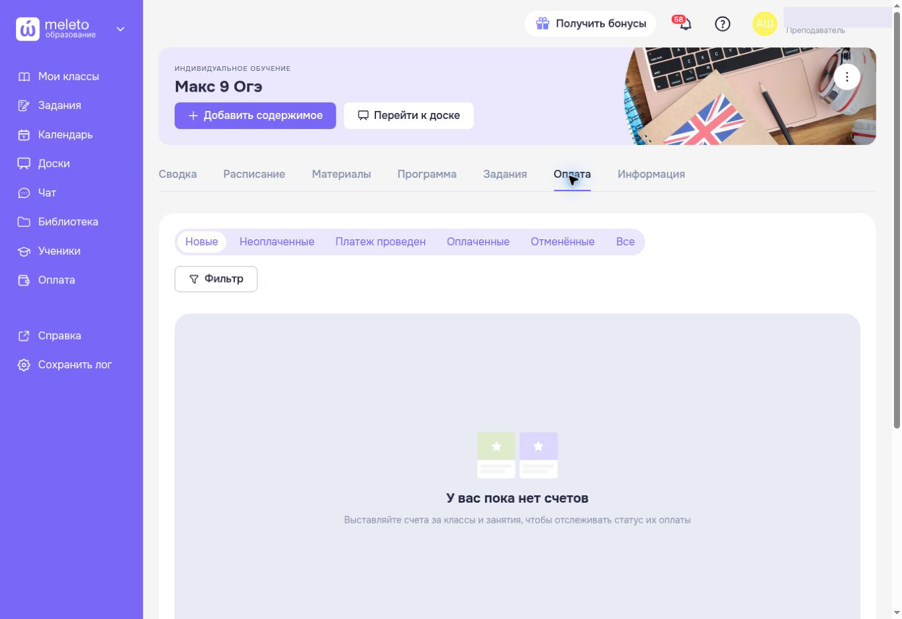
Что повторить: Статусы «Новые / Неоплаченные / Платеж проведён / Оплаченные / Отменённые / Все», фильтр и пустое состояние.
Поведение: Список счетов ограничен классом. Валюта и сумма относятся к счёту. Заявление об оплате и подтверждённая оплата — разные события.
Предлагаемые сущности: Invoice, Payment20. Класс: информация
Класс → Информация
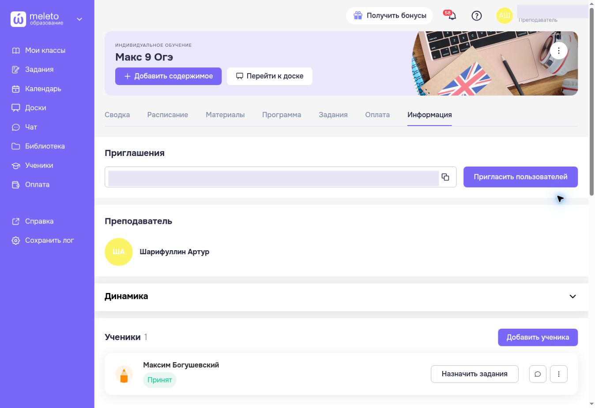
Что повторить: Приглашение по ссылке, преподаватель, раскрываемая динамика, ученики и представители, статусы допуска, чат и действия ученика.
Поведение: Участник класса имеет статус. Представителя связать с конкретными учениками, доступ проверять на сервере. Секретные ссылки на референсе скрыты.
Предлагаемые сущности: Enrollment, GuardianLink, Invitation21. Роль приглашения
Информация → Пригласить пользователей
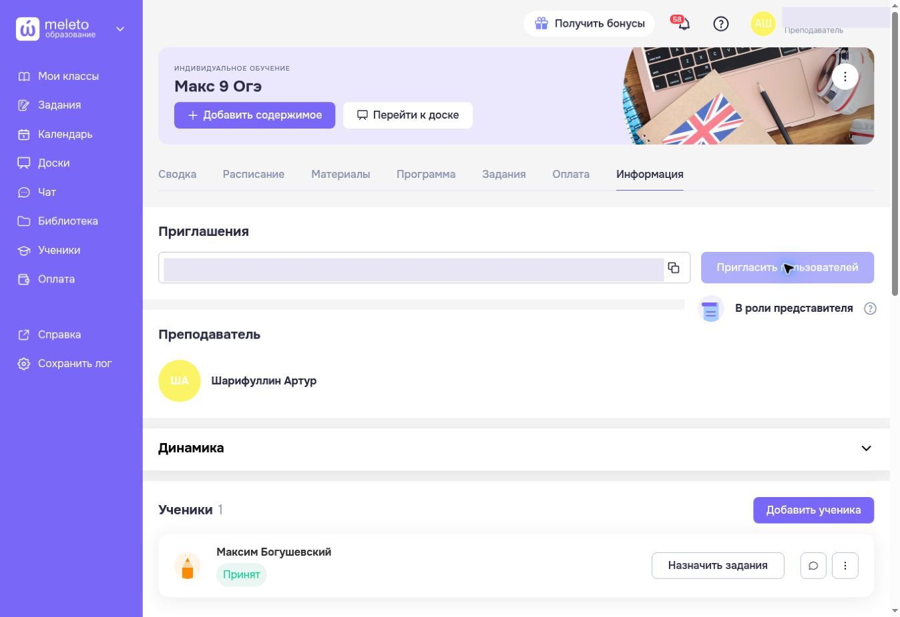
Что повторить: Небольшое меню «В роли представителя». Сохранить позицию относительно кнопки и подсветку активного элемента.
Поведение: Приглашение получает целевую роль и контекст класса; само открытие меню никого не приглашает.
Предлагаемые сущности: Invitation.role22. Приглашение представителя
Пригласить пользователей → В роли представителя
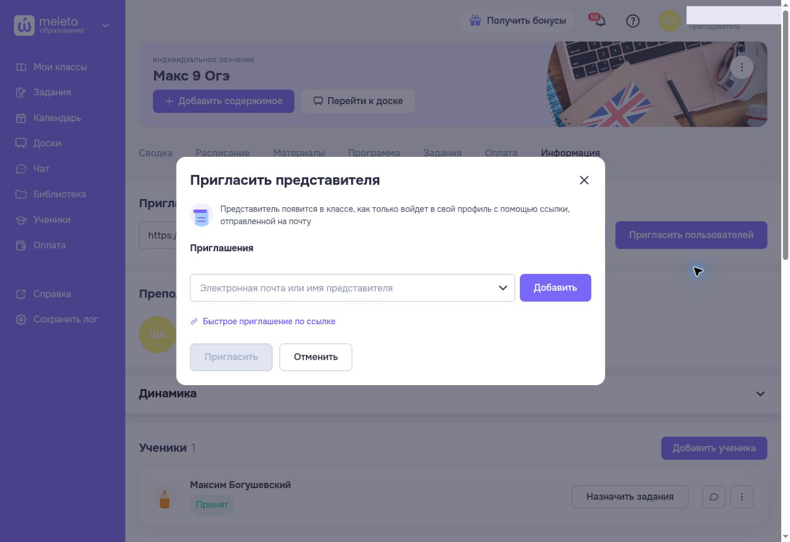
Что повторить: Пояснение механизма, поиск по имени/email, «Добавить», быстрая ссылка, «Пригласить / Отменить».
Поведение: Поддержать очередь адресатов, повторное приглашение и срок действия токена. Отправка — явная отдельная операция.
Предлагаемые сущности: Invitation, GuardianLink23. Завершённые занятия
Расписание → Завершённые
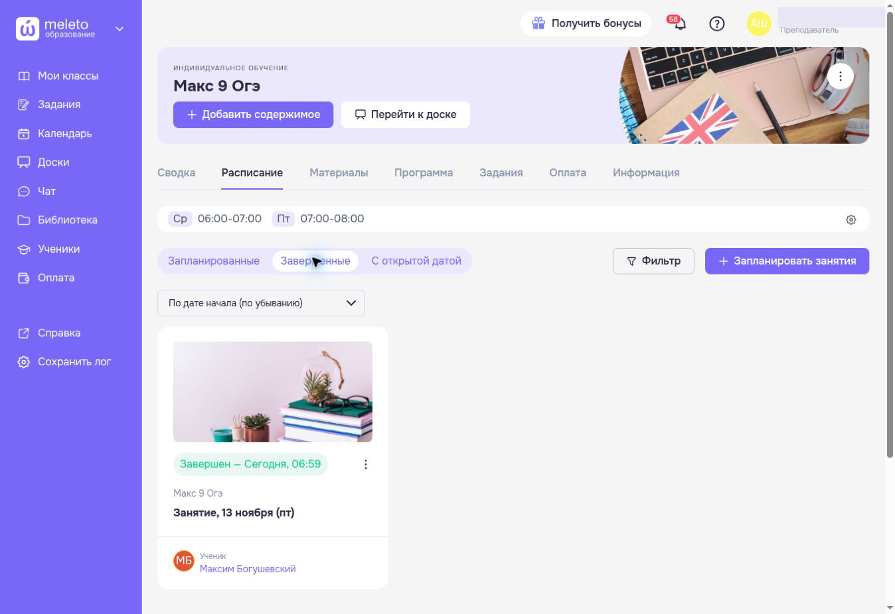
Что повторить: Сортировка, карточка с обложкой, временем завершения, названием класса и занятия, аватаром ученика.
Поведение: Завершённое занятие сохраняет материалы, посещаемость и историю. Не удалять его после окончания видеозвонка.
Предлагаемые сущности: Lesson.status=completed24. Карточка завершённого занятия
Расписание → Завершённые → карточка
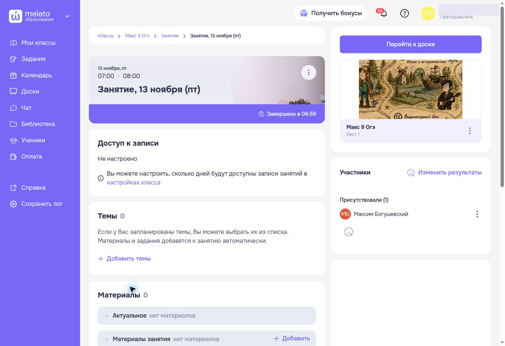
Что повторить: Хлебные крошки, большой блок даты/названия/статуса, доступ к записи, темы; справа доска и участники.
Поведение: Разрешённые действия зависят от состояния урока и роли. Запись, доска и чат имеют отдельные правила доступа.
Предлагаемые сущности: Lesson, Recording, Board, Attendance25. Занятие: материалы и история
Карточка занятия → прокрутка
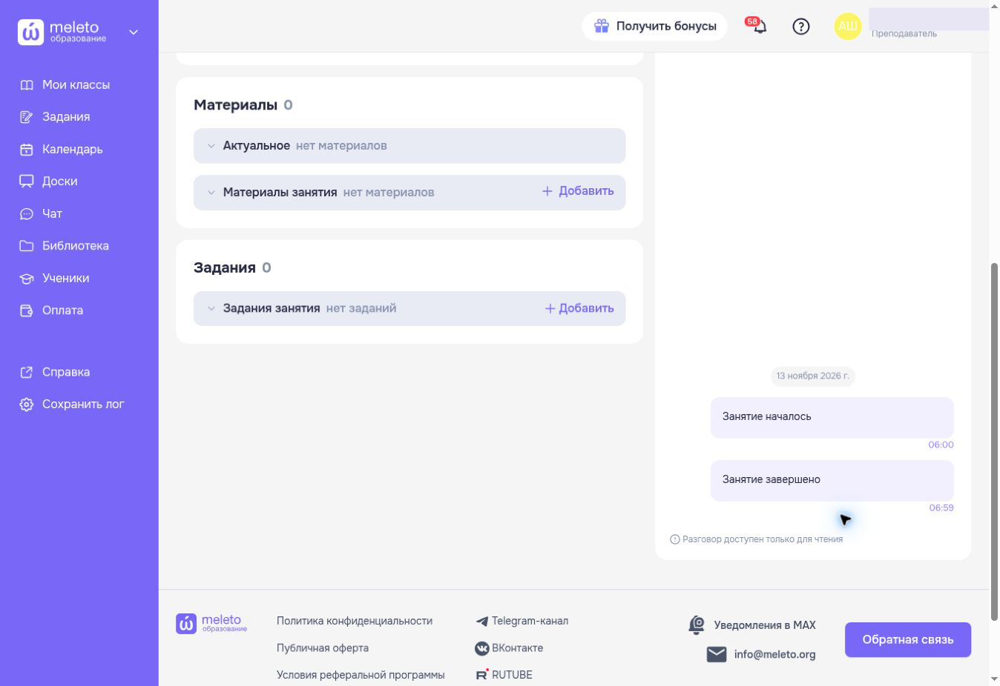
Что повторить: Блоки актуальных материалов и материалов урока, задания, участники, хронология начала/завершения и чат только для чтения.
Поведение: События урока хранить по времени. Завершение переводит общение в наблюдённый режим чтения; предметные результаты остаются редактируемыми преподавателем.
Предлагаемые сущности: LessonEvent, Message, MaterialLink26. Результаты занятия
Карточка занятия → Изменить результаты
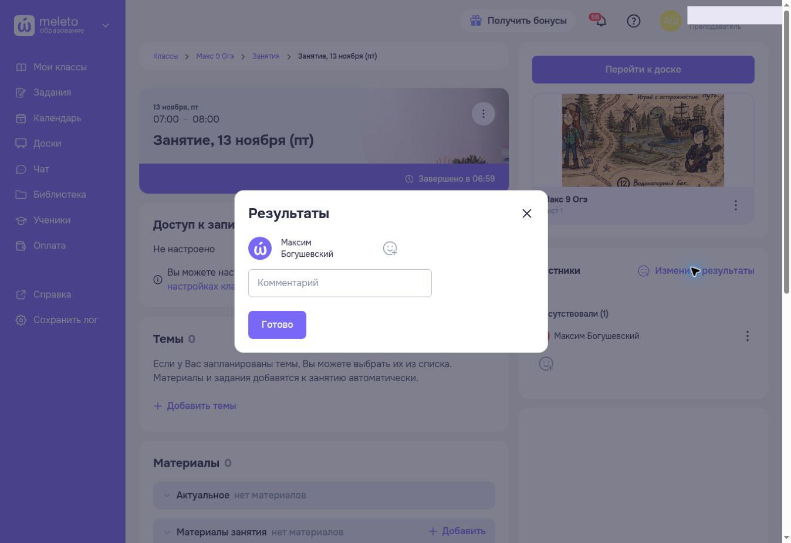
Что повторить: Компактное окно со строкой ученика, реакцией, комментарием и «Готово».
Поведение: Результат относится к паре занятие–ученик. Реакция и комментарий не должны перезаписывать результаты остальных участников.
Предлагаемые сущности: Attendance, LessonFeedback27. Источники материала
Занятие → Материалы → Добавить
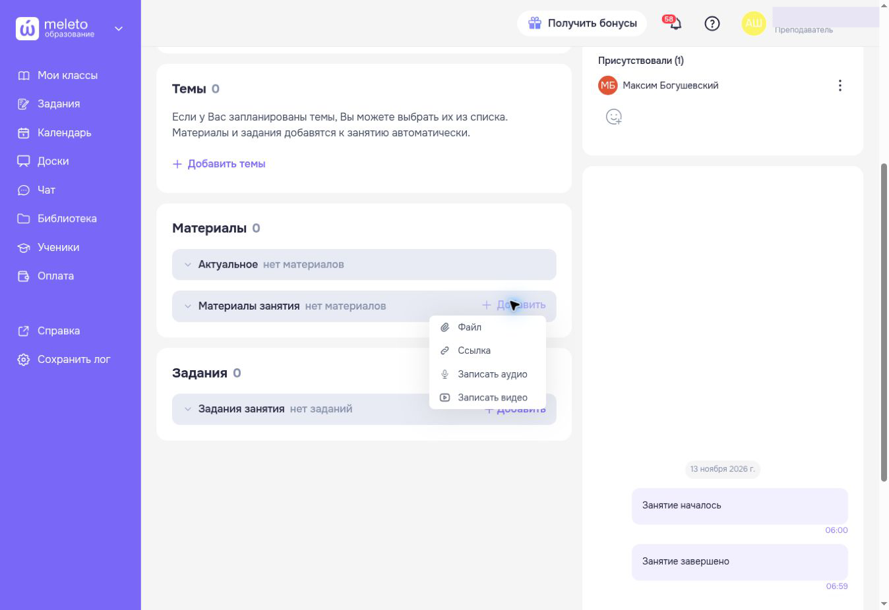
Что повторить: Контекстное меню: файл, ссылка, записать аудио, записать видео. Те же варианты использовать в других контекстах.
Поведение: Сначала создать файл или ссылку, затем прикрепить к контексту. Для записи требуются отдельные разрешения микрофона/камеры.
Предлагаемые сущности: Material.type, FileAsset28. Добавление ссылки
Материалы → Добавить → Ссылка
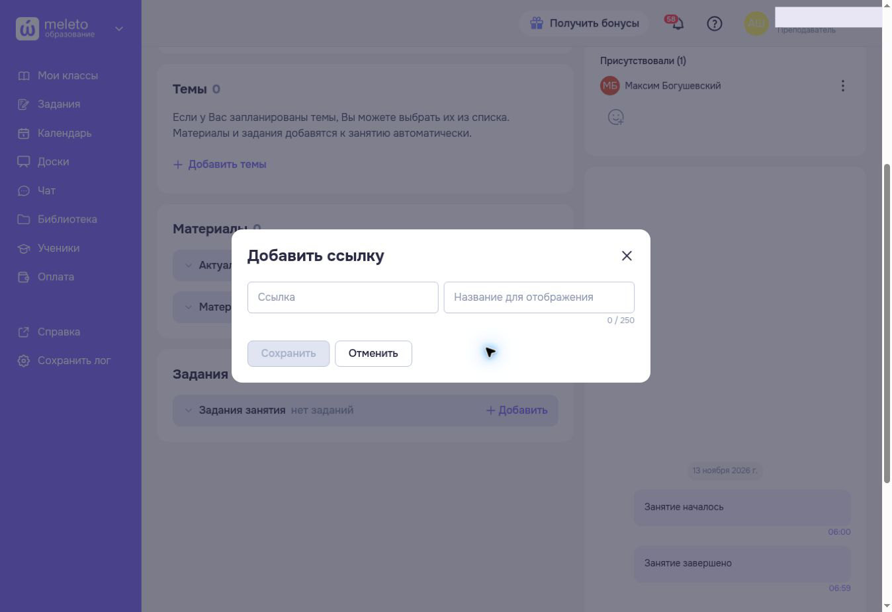
Что повторить: Окно с URL и названием отображения до 250; «Сохранить» неактивно до валидного ввода, рядом отмена.
Поведение: Проверять URL и длину на сервере. Отображать ссылку отдельной карточкой; название не обязано совпадать с URL.
Предлагаемые сущности: Material(type=link), MaterialLink29. Создание задания
Занятие → Задания → Добавить → Создать
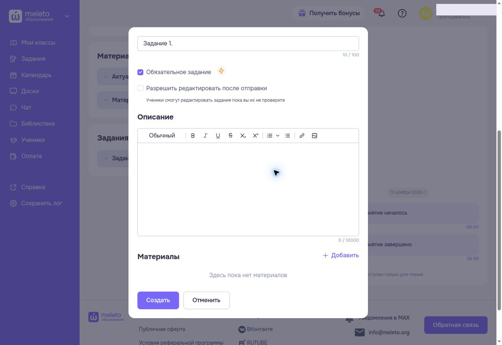
Что повторить: Название до 100, обязательность, разрешение редактирования после отправки, rich-text до 10000, материалы, создание/отмена.
Поведение: Сохранить определение задания отдельно от сдач. Право редактировать после отправки действует до проверки, если включено.
Предлагаемые сущности: Assignment, MaterialLink30. Фильтр счетов
Класс → Оплата → Фильтр
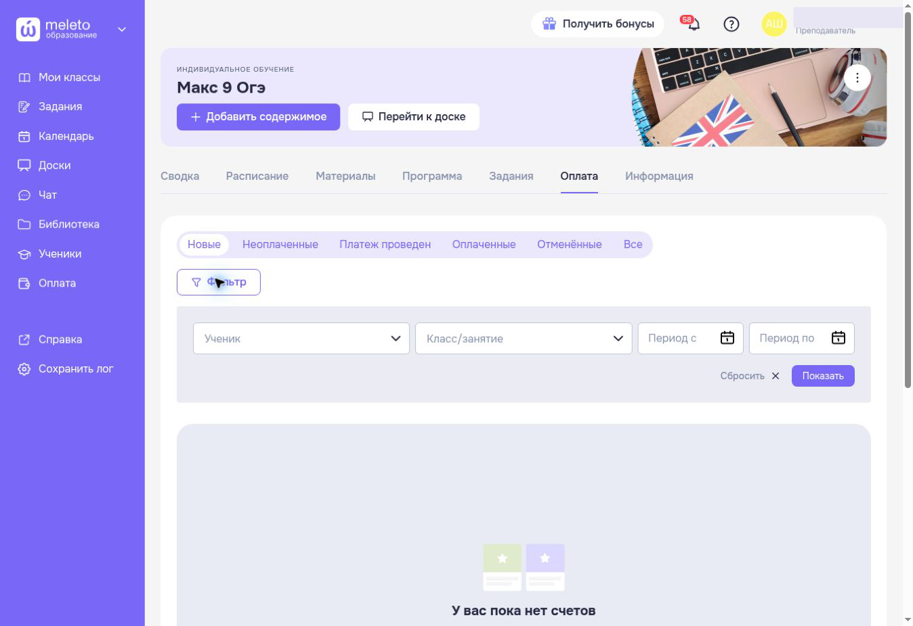
Что повторить: Ученик, класс/занятие, период с/по, сброс и показ результатов. Статусные подтабы остаются видны.
Поведение: Фильтр реализовать серверным запросом с пагинацией. Показывать число активных фильтров, сохранять состояние при переходах.
Предлагаемые сущности: Invoice filters31. Редактирование класса
Класс → меню → редактирование
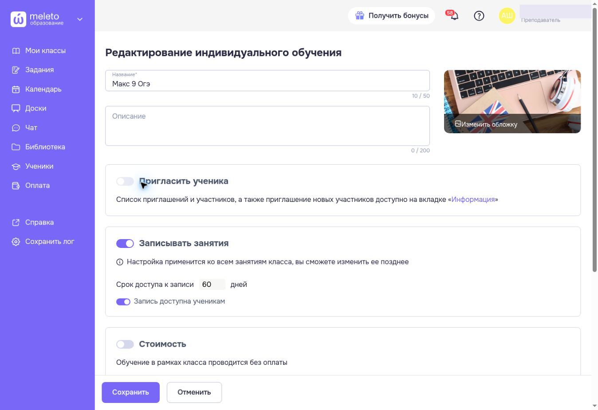
Что повторить: Те же поля и группировка, что при создании; уведомление, что участники находятся на вкладке «Информация». Нижние действия.
Поведение: Загружать значения существующего класса. Изменения применять только сохранением. Защитить от потери заполненной формы.
Предлагаемые сущности: Course, CourseSettings32. Статистика классов
Мои классы → Статистика
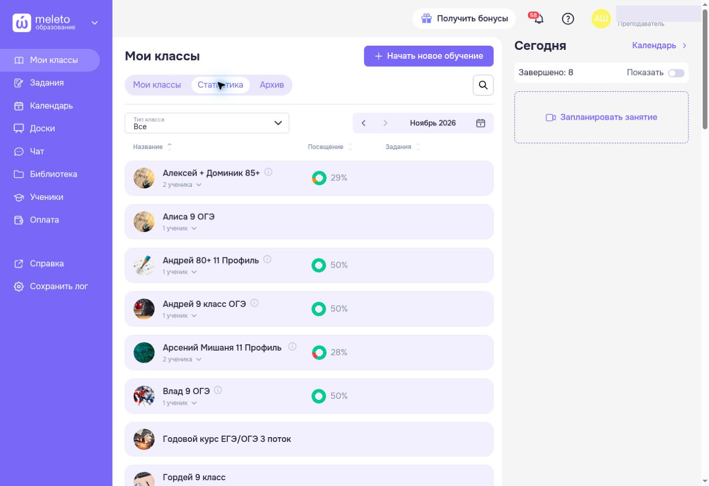
Что повторить: Тип класса, месяц, таблица: название, посещение, задания, компактные кольцевые показатели, раскрытие учеников.
Поведение: Показатели рассчитывать за выбранный период и по одному набору определений. При отсутствии данных показывать отсутствие данных.
Предлагаемые сущности: Attendance aggregates, Submission aggregates33. Архив классов
Мои классы → Архив
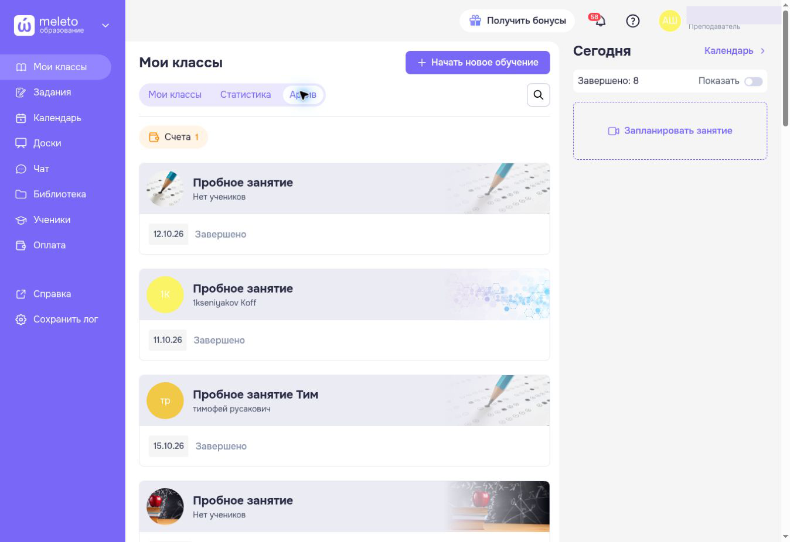
Что повторить: Карточки завершённых обучений с датой и статусом, общая шапка и панель «Сегодня».
Поведение: Архивирование отделить от удаления. История, уроки и результаты сохраняются и доступны согласно правам.
Предлагаемые сущности: Course.archived_at34. Глобальные задания: фильтры
Главное меню → Задания → Фильтр
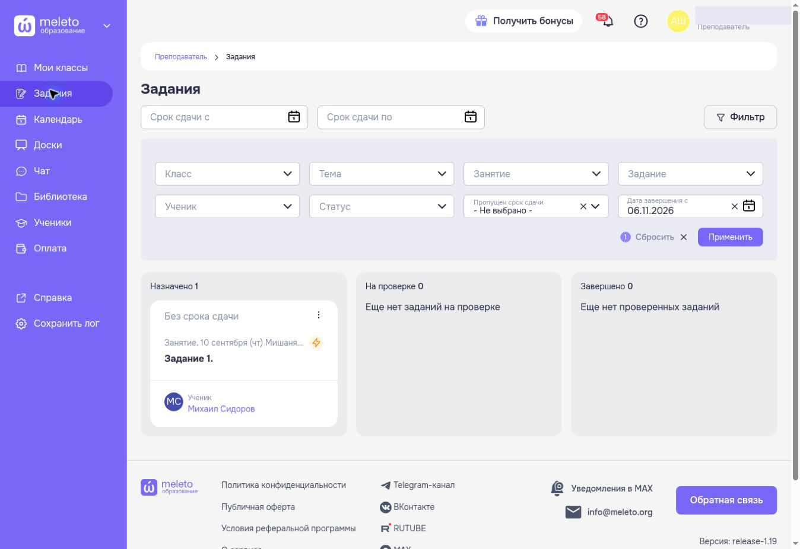
Что повторить: Диапазон срока сдачи, класс, тема, занятие, задание, ученик, статус, пропущенный срок и дата завершения; Применить/Сбросить.
Поведение: Все фильтры совместимы. Применять к назначениям ученикам. Сохранять фильтр в URL или эквивалентном состоянии маршрута.
Предлагаемые сущности: AssignmentRecipient filters35. Глобальная доска заданий
Главное меню → Задания
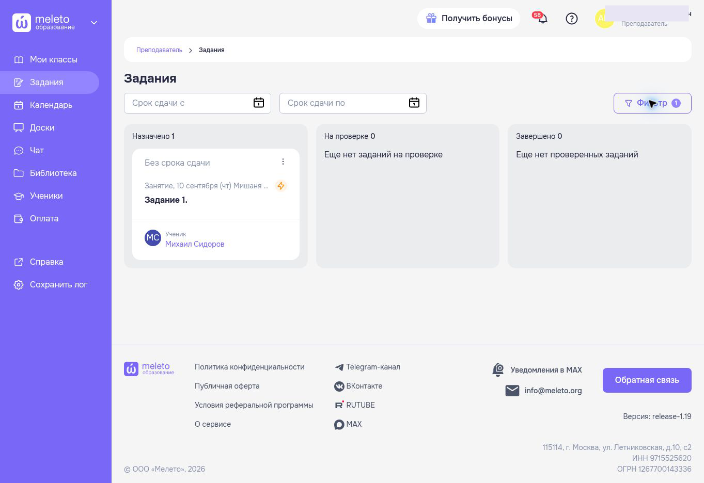
Что повторить: Три колонки «Назначено / На проверке / Завершено», счётчики и карточки. В карточке срок, контекст, обязательность и ученик.
Поведение: Переходы статусов происходят по сдаче и проверке; перемещение карточки мышью на источнике не проверялось и не является обязательным по этому кадру.
Предлагаемые сущности: AssignmentRecipient.status36. Карточка назначенного задания
Задания → карточка ученика
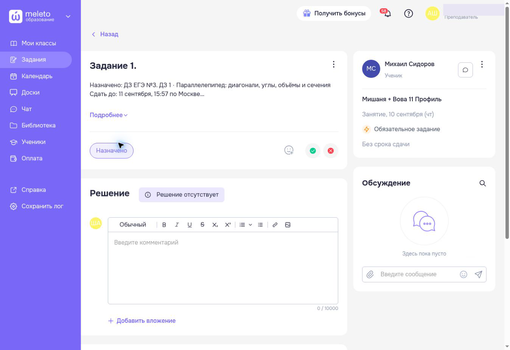
Что повторить: Условие, «Подробнее», статус, реакции, решение, редактор комментария и вложения; справа ученик, класс, занятие и обсуждение.
Поведение: Разделить условие, попытки решения, проверку и чат. Изменение статуса должно проверять роль. Сообщения сохранять в контексте назначения.
Предлагаемые сущности: Submission, Review, Message37. Календарь: день
Главное меню → Календарь → День
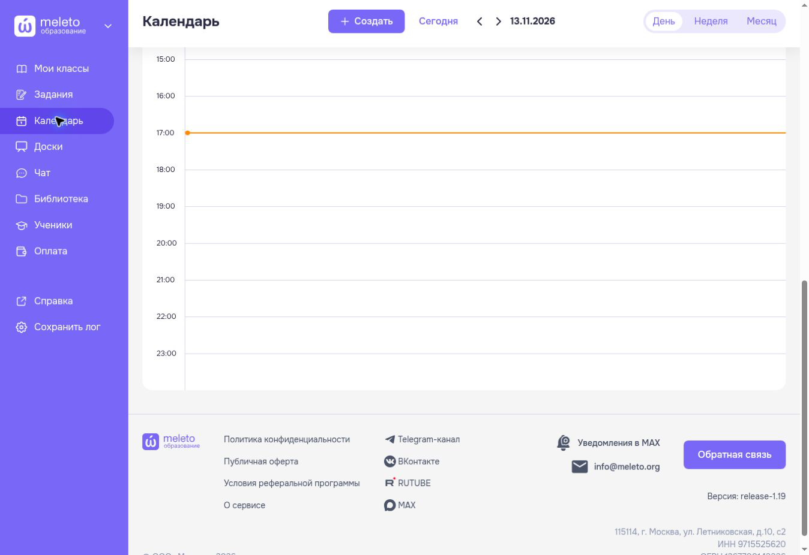
Что повторить: Шкала часов, карточки событий, оранжевая линия текущего времени, дата, стрелки, «Сегодня», «Создать».
Поведение: Отображать фактические занятия и регулярные слоты разными состояниями. Хранить время в UTC, отображать в зоне пользователя.
Предлагаемые сущности: Lesson, ScheduleRule38. Календарь: неделя
Календарь → Неделя
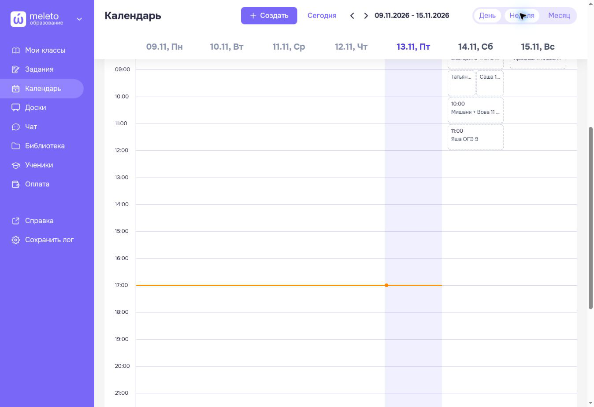
Что повторить: Семь вертикальных колонок с датами, подсвеченный текущий день, часовая сетка, события и линия времени.
Поведение: Переходы недели и возврат на сегодня не теряют выбранный режим. Для пересечений определить раскладку карточек.
Предлагаемые сущности: Calendar view state39. Календарь: месяц
Календарь → Месяц
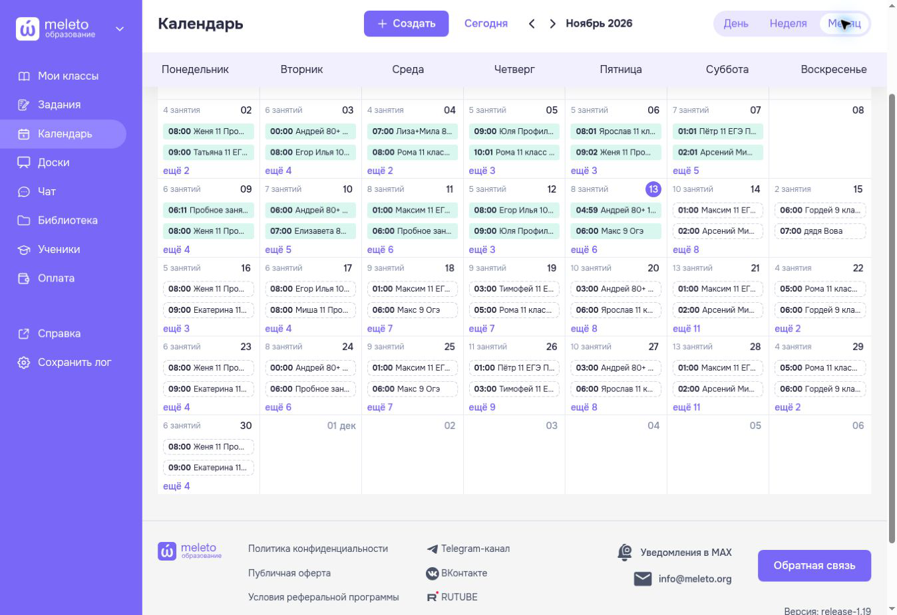
Что повторить: Сетка дней, соседние месяцы, краткие события и «ещё N», навигация месяца. Не растягивать высоту ячеек под весь список.
Поведение: Нажатие дня/«ещё» должно открывать события дня или их список. Общая выборка данных с дневным и недельным видами.
Предлагаемые сущности: Lesson range query40. Календарь: разовое занятие
Календарь → Создать → Разовое занятие
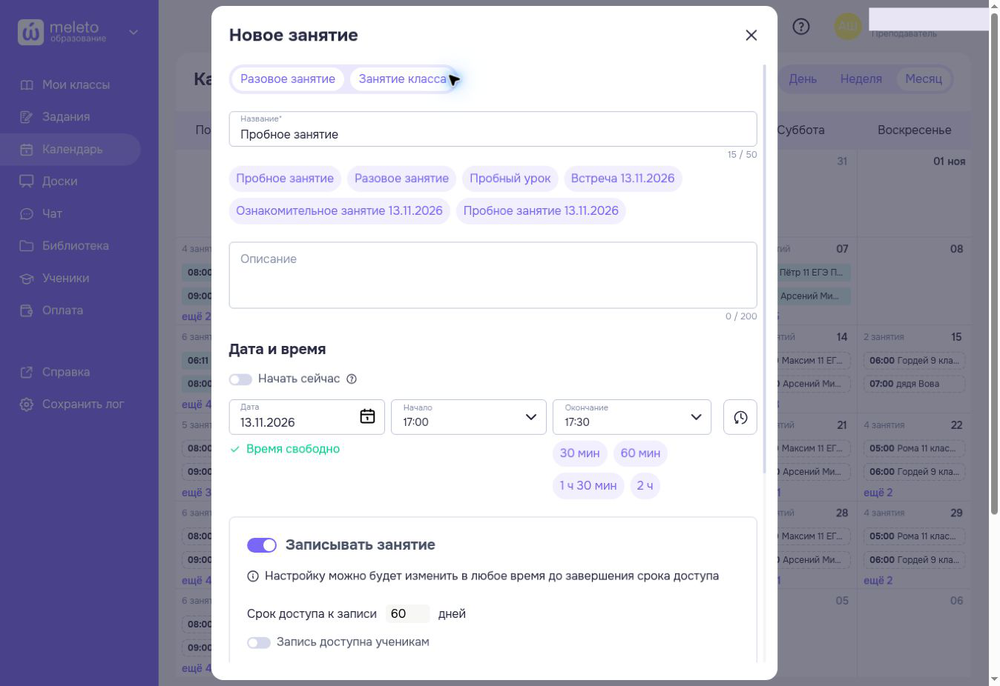
Что повторить: Высокое модальное окно с названием, подсказками, описанием, датой и временем, записью; внутренний скролл.
Поведение: Переиспользовать валидаторы полной формы разового занятия. Дата выбранной ячейки может предзаполнять черновик.
Предлагаемые сущности: Lesson.kind=one_time41. Календарь: занятие класса
Календарь → Создать → Занятие класса
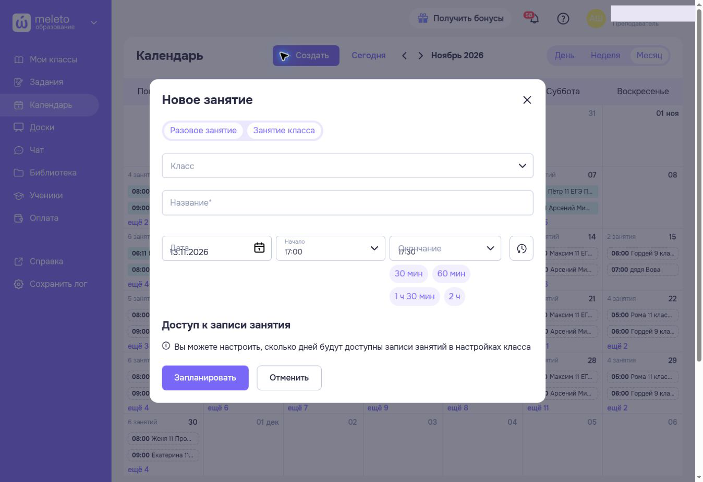
Что повторить: Переключатель формата, выбор класса, название, дата/время, длительность, пояснение о записи и действия.
Поведение: После выбора класса подтягивать его политики. Созданное занятие должно появляться в календаре и расписании класса.
Предлагаемые сущности: Lesson.course_id42. Ученики: список
Главное меню → Ученики
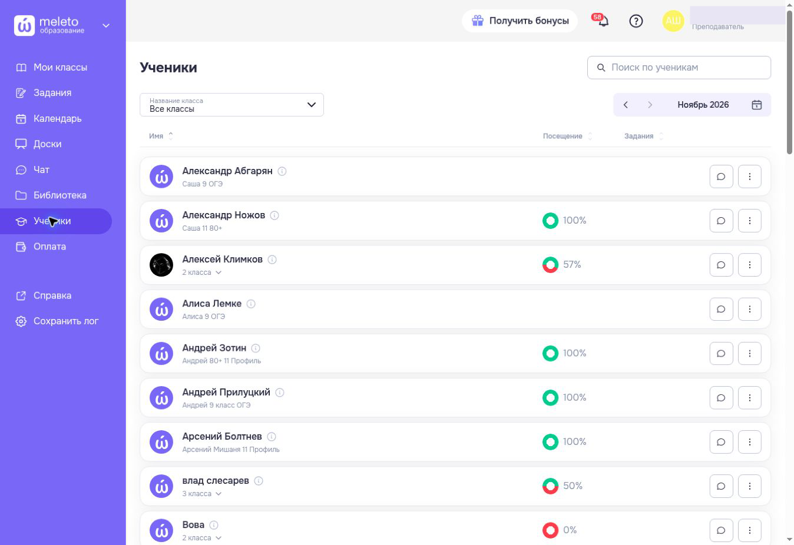
Что повторить: Поиск, фильтр класса, месяц, сортируемые строки учеников, проценты посещения и заданий, чат и меню строки.
Поведение: Один ученик может состоять в нескольких классах. Не создавать дубль пользователя при каждом новом обучении.
Предлагаемые сущности: User, Enrollment43. Ученик: посещение
Ученики → ученик → Посещение
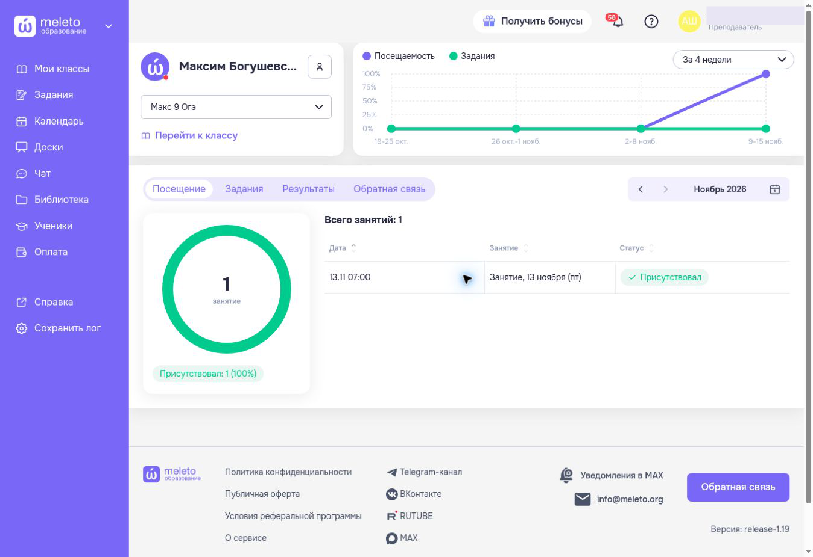
Что повторить: Слева имя/класс, справа график за период; ниже вкладки, месяц, кольцевая диаграмма и список занятий со статусами.
Поведение: Посещаемость хранить на участнике урока. Для пары или группы один урок имеет несколько независимых записей посещения.
Предлагаемые сущности: Attendance(lesson_id,student_id)44. Информация об ученике
Карточка ученика → иконка информации
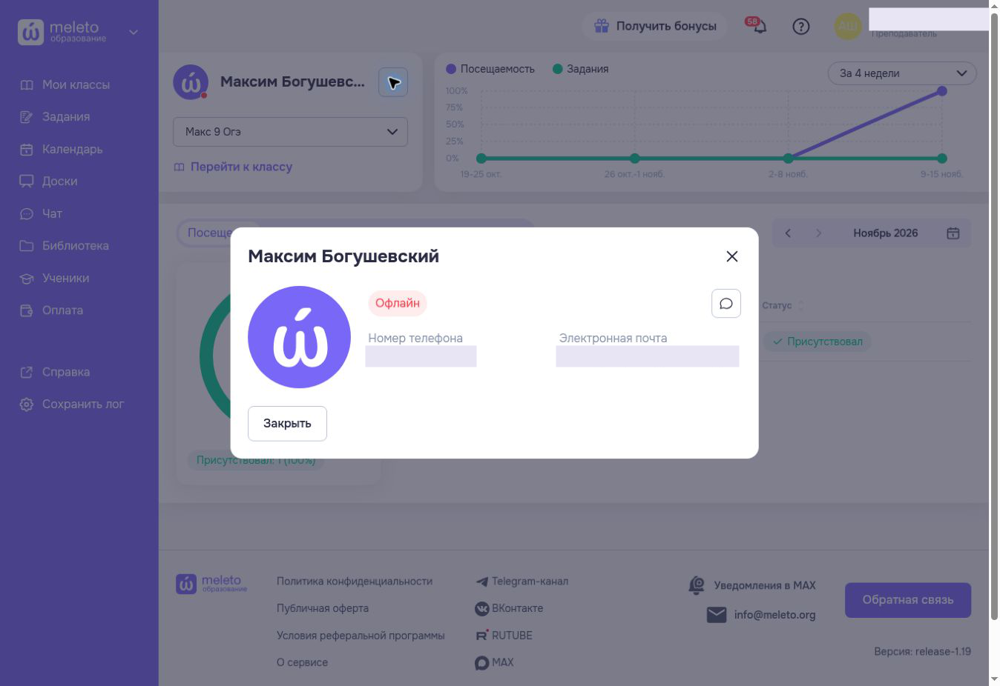
Что повторить: Окно с аватаром, именем, онлайн-статусом, телефоном/email в ограниченном виде, чатом и закрытием.
Поведение: Контакты отдавать по правам и маскировать при необходимости. Кнопка чата открывает диалог с этим учеником.
Предлагаемые сущности: User, Conversation45. Ученик: задания
Карточка ученика → Задания
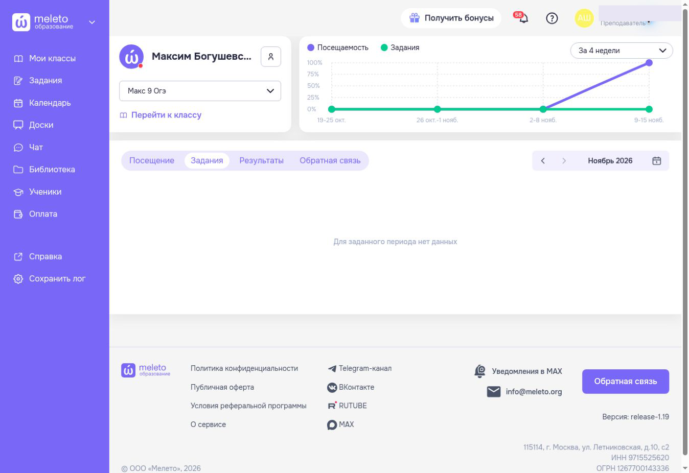
Что повторить: Общая шапка/динамика и область назначений за месяц. На кадре корректное пустое состояние.
Поведение: Учитывать выбранного ученика, класс и период одновременно. Не переносить общий статус задания на всех учеников.
Предлагаемые сущности: AssignmentRecipient, Submission46. Ученик: результаты
Карточка ученика → Результаты
Что повторить: Те же шапка и период; отдельная вкладка результатов, на кадре данных нет.
Поведение: Показывать результаты конкретных уроков и проверок, а не вымышленные проценты. Расчёт и визуальный вывод разделить.
Предлагаемые сущности: LessonFeedback, Review47. Ученик: обратная связь
Карточка ученика → Обратная связь
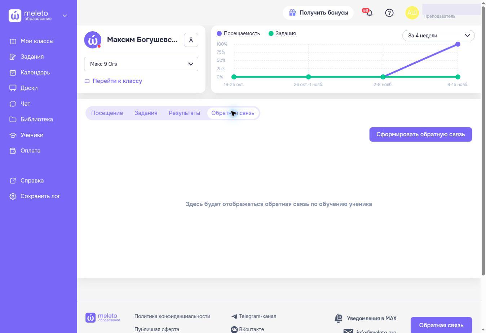
Что повторить: Пустое состояние и «Сформировать обратную связь» справа.
Поведение: Форма генерации/отправки не исследована. В копии спроектировать отдельный черновик отчёта и явное действие отправки после просмотра.
Предлагаемые сущности: FeedbackReport (предлагается)48. Библиотека: файлы
Главное меню → Библиотека → Файлы
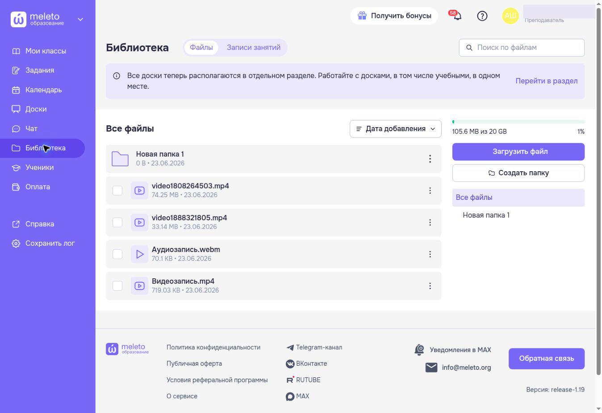
Что повторить: Список файлов/папок, поиск, сортировка, объём хранилища; справа загрузка, создание папки и дерево. Плашка перехода к доскам.
Поведение: Метаданные отделить от бинарного объекта. Один файл использовать в нескольких уроках через связи. Папка — навигационный контейнер.
Предлагаемые сущности: FileAsset, Folder, MaterialLink49. Меню файла
Библиотека → строка файла → многоточие
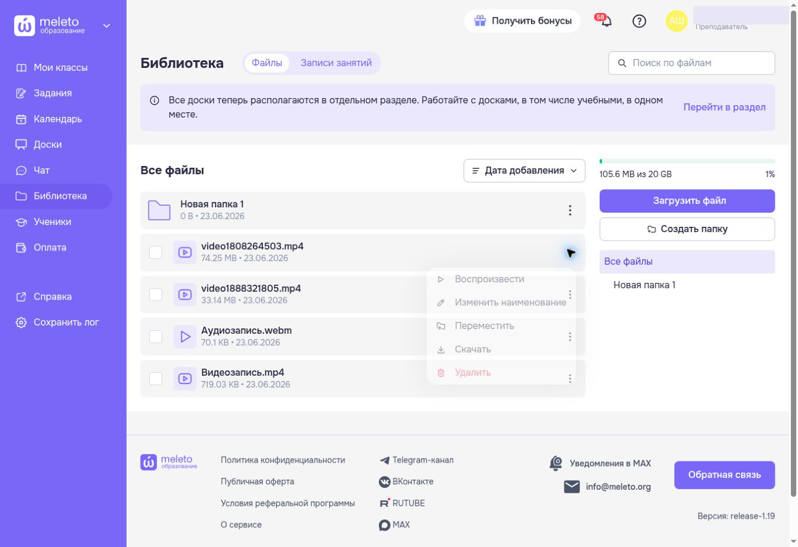
Что повторить: Воспроизведение, переименование, перемещение, скачивание, удаление; недоступные действия визуально отключены.
Поведение: Проверять права на каждое действие. Удаление не исследовалось. В реализации предусмотреть подтверждение и восстановление, если это выбрано в продуктовой модели.
Предлагаемые сущности: FileAsset permissions50. Библиотека: записи
Библиотека → Записи занятий
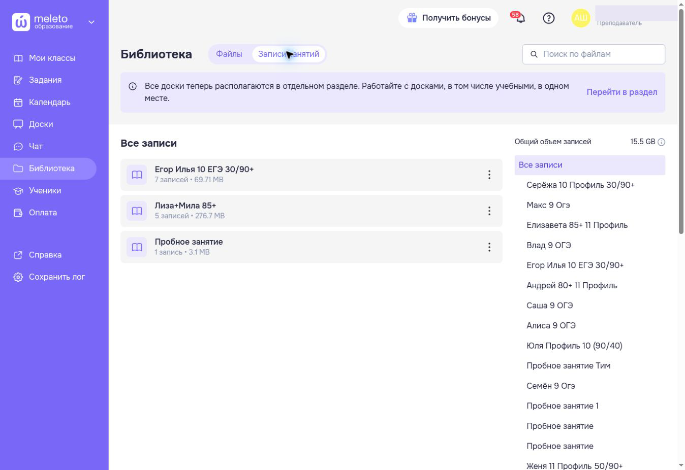
Что повторить: Записи сгруппированы по классам; число и объём, дерево классов справа, поиск. Объём записей отдельно от файлов.
Поведение: Запись связана с занятием, классом и сроком доступа. Завершение срока закрывает просмотр согласно политике.
Предлагаемые сущности: Recording, RecordingPolicy51. Чат: список диалогов
Главное меню → Чат
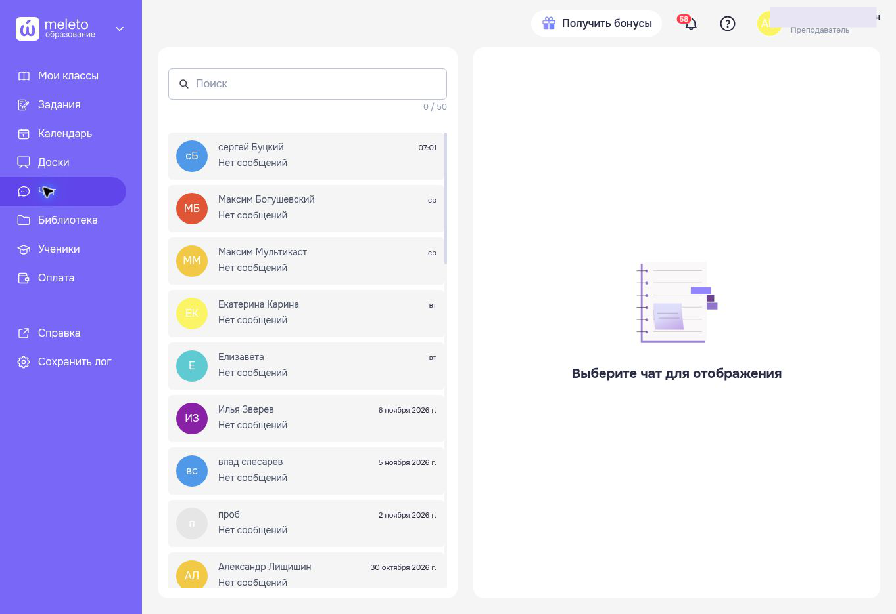
Что повторить: Две колонки: поиск и диалоги слева, заглушка «Выберите чат» справа. Строки с аватаром, датой и превью.
Поведение: Участники определяют доступ к разговору. Поддержать непрочитанные сообщения и переход из карточки ученика.
Предлагаемые сущности: Conversation, ConversationMember52. Личный диалог
Чат → строка диалога
Что повторить: Шапка собеседника, статус, поиск/меню, лента сообщений, пустое состояние, поле ввода с вложением, эмодзи и отправкой.
Поведение: Отправка создаёт Message и обновляет список. Сообщение относится к разговору, не к произвольной странице. Вложения — FileAsset.
Предлагаемые сущности: Message, MessageAttachment53. Общая оплата
Главное меню → Оплата
Что повторить: Те же статусные подтабы и фильтр, что в классе, но по всем доступным счетам. Пустое состояние в большой белой панели.
Поведение: Не смешивать счета учеников с подпиской самого преподавателя на сервис. Это два разных финансовых контекста.
Предлагаемые сущности: Invoice, Payment54. Меню аккаунта
Правый верхний угол → имя
Что повторить: Плавающая карточка: профиль, действующий тариф, настройки, уведомления, смена роли, выход.
Поведение: Открытие меню не меняет роль. Подписка связана с аккаунтом/организацией, а отображаемая роль — с текущим кабинетом.
Предлагаемые сущности: UserRole, Subscription55. Профиль: личная информация
Меню аккаунта → Настройки профиля
Что повторить: Фамилия/имя/отчество, псевдоним, фото, часовой пояс и контакты. Отдельная кнопка сохранения личных данных.
Поведение: Отделить профиль от аутентификационных данных. Смена телефона/email требует собственного подтверждения. Не вшивать данные владельца в шаблон.
Предлагаемые сущности: UserProfile, User.time_zone56. Профиль: уведомления
Профиль → Уведомления → Подробнее
Что повторить: Матрица событий и каналов Email/Telegram/Max/браузер. Переключатели каналов и отдельных событий.
Поведение: Настройки хранить по пользователю, событию и каналу. Внешние каналы подключать явным действием пользователя.
Предлагаемые сущности: NotificationPreference57. Профиль: реквизиты
Профиль → Реквизиты
Что повторить: Якорная навигация по одной длинной странице; блок реквизитов и «Добавить», ниже смена пароля.
Поведение: У реквизита есть тип и видимость плательщикам. Не смешивать реквизит преподавателя с банковской картой оплаты подписки.
Предлагаемые сущности: PaymentRequisite58. Профиль: смена пароля
Профиль → Смена пароля
Что повторить: Старый/новый пароль, скрытие/показ, подсказки требований, кнопка сохранения. Поля на кадре пустые.
Поведение: Это только визуальный референс. В своей платформе применять собственную безопасную политику паролей, хеширование и проверку текущего пароля.
Предлагаемые сущности: Authentication (собственная реализация)59. Публичный профиль: старт
Профиль → Публичный профиль
Что повторить: Стартовый баннер с описанием и кнопкой создания. Редактор и опубликованная карточка не открывались.
Поведение: Публичная витрина отделена от приватного профиля. Не публиковать контакты и сведения без явного сохранения владельцем.
Предлагаемые сущности: PublicProfile (предлагается)60. Смена роли
Меню аккаунта → Сменить роль
Что повторить: Три карточки: ученик, представитель, преподаватель; активная роль отмечена, остальные предлагают выбор.
Поведение: Один пользователь имеет несколько ролей. Переключение меняет кабинет и серверные разрешения. Кабинеты ученика/родителя этим кадром не описаны.
Предлагаемые сущности: UserRole, RoleContext61. Тарифы
Меню аккаунта → тариф → Тарифы
Что повторить: Плашка бонусов, промокод, месяц/год, карточки тарифов с ценой, признаками и рекомендацией.
Поведение: Цены на кадре — состояние источника в день съёмки. В своей системе хранить тарифы и лимиты конфигурацией, а не текстом компонентов.
Предлагаемые сущности: Plan, PlanFeature, Subscription62. Бонусная программа
Управление тарифом → Мои бонусы
Что повторить: Правила, баланс, реферальная ссылка, копирование, приглашённые пользователи. Личный токен на изображении скрыт.
Поведение: Баланс считать по журналу начислений/списаний со сроком действия. Реферальные события не должны начисляться повторно.
Предлагаемые сущности: BonusLedger, Referral63. Онлайн-школа: обзор
Управление тарифом → Онлайн-школа
Что повторить: Описание, калькулятор лицензий/учеников, месяц/год, цена, «Открыть школу», таблица возможностей.
Поведение: Внутренний кабинет школы не исследован. Для многопреподавательской системы предложены Organization и OrganizationMember; это архитектурная рекомендация.
Предлагаемые сущности: Organization, OrganizationMember64. Каталог досок
Главное меню → Доски
Что повторить: Сетка превью, дата изменения, поиск, сортировка; справа новая доска, папки, недавние, учебные, тетради, доступные, избранные, архив, импорт.
Поведение: Доску хранить независимо от урока. Доступ, папка, избранное и связь с классом — отдельные отношения, а не разные копии canvas.
Предлагаемые сущности: Board, BoardFolder, BoardAccess65. Доска: рабочая область
Доски → существующая доска
Что повторить: Большой canvas, верхнее меню/поиск/undo-redo, слева инструменты, справа участники/таймер, снизу листы, масштаб и звонок/доступ.
Поведение: Поддержать масштабирование и панорамирование без изменения координат объектов. Содержимое учебной доски — пример, не обязательный контент копии.
Предлагаемые сущности: BoardPage, BoardObject66. Главное меню доски
Доска → меню в левом верхнем углу
Что повторить: Назад, листы, история, экспорт, настройки, импорт, шаблоны, дублирование, удаление/очистка, помощь.
Поведение: Каждое действие имеет отдельный обработчик и проверку прав. Удаление и очистку по этому аудиту не запускать. Историю хранить отдельно от списка объектов.
Предлагаемые сущности: BoardPage, BoardRevision67. Настройки доски
Доска → меню → Настройки
Что повторить: Слева категории, справа фон/цвет и плитки шаблонов сетки. Видны настройки панели, набора инструментов, привязки и ввода.
Поведение: Настройки могут быть пользовательскими или общими для доски — выбрать и явно зафиксировать scope. Значения не менять открытием окна.
Предлагаемые сущности: BoardSettings, UserBoardPreference68. Наборы инструментов доски
Доска → раскрыть панель инструментов
Что повторить: Вертикальные пресеты и горячие клавиши; выбор, перо, маркер, ластик, линии/фигуры, текст, заметки, вложения, предметные инструменты.
Поведение: Горячие клавиши должны соответствовать активному набору. Не создавать фигуры автоматически при открытии меню.
Предлагаемые сущности: ToolPreset, BoardObject.type69. Доступ к доске
Доска → Поделиться
Что повторить: Небольшое окно: роль новых пользователей по ссылке, копирование ссылки, закрытие.
Поведение: Роль доступа и токен ссылки проверять на сервере. Копирование уже существующей ссылки не должно создавать новую публичную политику без подтверждения.
Предлагаемые сущности: BoardAccess, ShareLink70. Добавление реквизита
Профиль → Реквизиты → Добавить
Что повторить: Виден плательщикам, способ оплаты, номер карты, банк и ФИО получателя; добавить/отменить. Снята пустая форма.
Поведение: Тип реквизита определяет поля. Приватные значения не выводить в клиентские логи; показывать только нужным плательщикам.
Предлагаемые сущности: PaymentRequisite71. Публичная главная
Ссылка «О сервисе» → landing
Что повторить: Светлая фиолетовая обложка, навигация, крупный заголовок, иллюстрация, Войти/Начать бесплатно. Это отдельный стиль маркетинговой страницы.
Поведение: Вход на источнике перенаправляет авторизованного пользователя в кабинет. Сам экран логина в текущей сессии не снят.
Предлагаемые сущности: Public routes, Authentication72. Объявление в классе
Добавить содержимое → Объявление
Что повторить: Центральный rich-text редактор до 10000 символов, панель форматирования, Добавить/Отменить.
Поведение: Объявление относится к классу и доступно его участникам. Публикация — только явной кнопкой, открытие формы не создаёт запись.
Предлагаемые сущности: Announcement73. Серия занятий: период
Добавить содержимое → Занятия → Несколько → Период
Что повторить: Слоты расписания, переключатель режима, даты с/по, Запланировать/Отменить.
Поведение: Сгенерировать кандидаты по правилам расписания в выбранной зоне. Защищать от повторного создания тех же уроков.
Предлагаемые сущности: ScheduleRule → Lesson batch74. Серия занятий: количество
Планирование нескольких занятий → Количество
Что повторить: Тот же диалог, вместо диапазона поле количества занятий. Общие слоты и действия.
Поведение: Рассчитать следующие N слотов, проверять конфликты и лимит. Сохранение серии должно быть повторяемым без дублей при сетевом повторе.
Предлагаемые сущности: Lesson batch idempotency